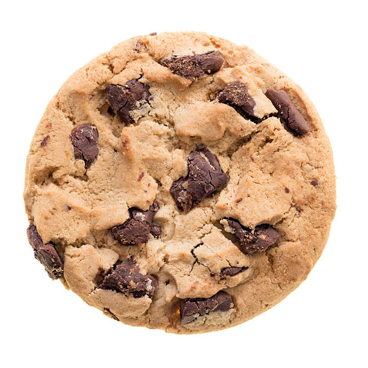

- Combine sugar and cocoa and stir until very smooth. Add butter and milk.
- Microwave on high for 6 minutes.
- Slowly add and swirl any one or combination of the following ingredients:
- Microwave on high for 1 minute. Drop by teaspoon on a sheet of waxed paper. Chill until set.
-
“glunch”
-
“a look of disdain, anger, or displeasure”
-
“glumpy”
-
“sullen, morose, or sulky.”
